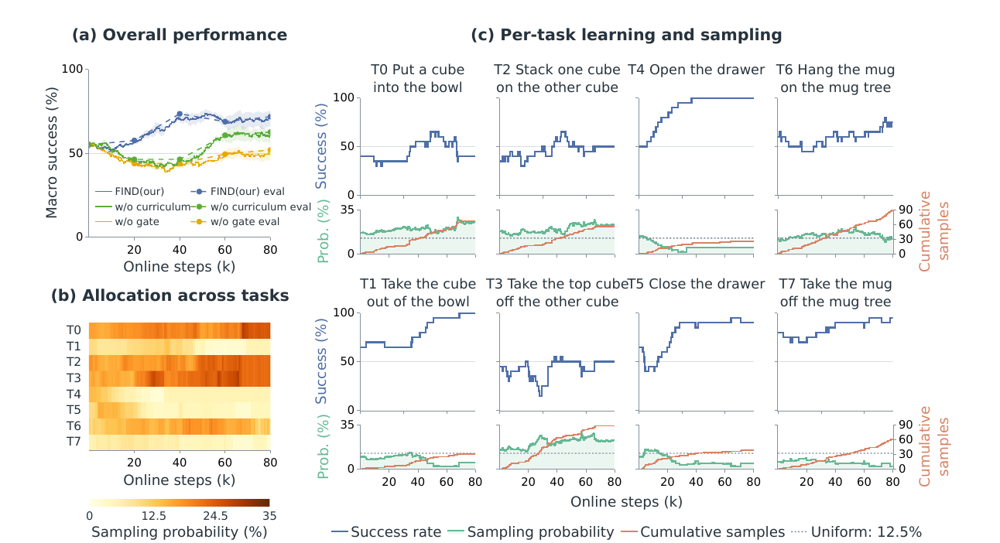

Scene-conditioned task selection
Scene-conditioned task selection allows FIND to continue practicing without repeatedly restoring the manipulated objects to a predefined configuration.
Agentic Real-World Reinforcement Learning for Self-Improving VLA Models
A robot that learns what to practice next. FIND connects scene understanding, weakness-aware task selection, self-evaluation, and policy improvement in a persistent real-world workspace.
1 TU Darmstadt · 2 Hessian.AI · 3 University of Augsburg
4 Tongji University · 5 Shanghai Research Institute for Intelligent Autonomous Systems
* Equal contribution
Vision–language–action (VLA) models provide strong priors for robotic manipulation, but they are typically deployed as frozen policies, unable to improve from their own failures. Real-world reinforcement learning offers a path to continued improvement, yet manual environment resets and task-success supervision hinder autonomous learning.
We introduce FIND, an agentic real-world RL framework that closes the loop between scene understanding, weakness-aware practice, self-evaluation, and policy improvement in a persistent workspace. Instead of restoring a predefined scene after each rollout, a vision–language agent identifies feasible tasks from a fixed library, prioritizes those with lower recent success rates, and evaluates outcomes using paired before and after observations.
Using a frozen π0.5 VLA with residual off-policy RL, FIND improves independent human-assessed success across eight real-world tasks from 55% to 71.9%. A representative 6-hour run completes 456 episodes with 30 scene-recovery interventions and no human-provided reward labels during online learning.
We introduce FIND, an agentic real-world RL framework that closes the autonomous loop between scene understanding, weakness-aware practice, self-evaluation, and policy improvement in a persistent workspace.

Scene-conditioned task selection allows FIND to continue practicing without repeatedly restoring the manipulated objects to a predefined configuration.
FIND instead tracks recent task performance and gives higher priority to tasks on which the current policy performs poorly.
Paired-image self-evaluation provides autonomous task-level supervision without requiring human outcome labels.
The pretrained VLA remains frozen, while a lightweight residual policy learns bounded corrections from offline demonstrations and autonomously collected experience.

Reversible or mutually compatible tasks allow one rollout’s final scene to become the next rollout’s starting point.
The full FIND system improves independent human-assessed task success across eight real-world tasks.
Mean across five runs at the final checkpoint. Human-assessed evaluation rollouts were kept separate from training.

In the representative 6-hour run, 426 of 456 episodes proceeded without human intervention. The 30 interventions were manual scene recoveries; online learning required no human-provided reward labels.
@article{fang2026find,
title={Find Something You Can't Do: Agentic Real-World Reinforcement Learning for Self-Improving VLA Models},
author={Fang, Yuan and Li, Zechu and Tong, Haolei and Liu, Puze and Chalvatzaki, Georgia},
journal={arXiv preprint arXiv:2609.32069},
year={2026}
}